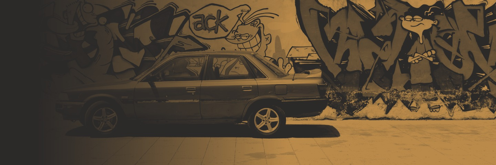

It began with a question about the next shock, and who gets hit first.
A few years ago, Deon started thinking about a bigger crisis than the ones before it: a global economic crash, or a run of disasters. In South Africa, the people hit hardest would be poor and marginalised communities, left to fend for themselves.
He wrote down what would fail first: energy, water, food, safety, health, and the ability to trade. Then he asked a different question. What if communities were already connected, and already helping each other, before any of it happened? Ubuntu, with better tools.
Deon Hanns and Claire Hanns are the founders. Deon is a visual facilitator and the founder of The San Scribe, whose Neuro Narrative Mapping method is the basis of one of our training tracks, and the author of San Consciousness: The Return of the First Wisdom Keepers. Claire works alongside him on community and production.
The board is in formation. We'll name our directors once they've said yes.
Nothing on this site describes something that doesn't exist yet. If it isn't built, we say so.
We come when we're asked, and we leave the structure with the people who live there.
No surplus is paid to anyone. It all goes back into the work.
We keep a dated log of real progress, good and bad.